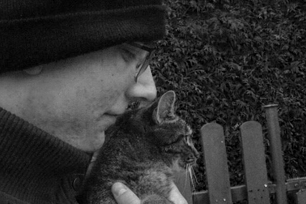
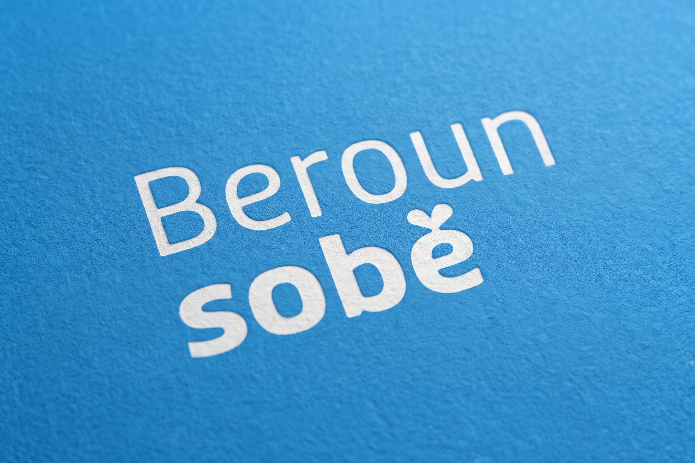
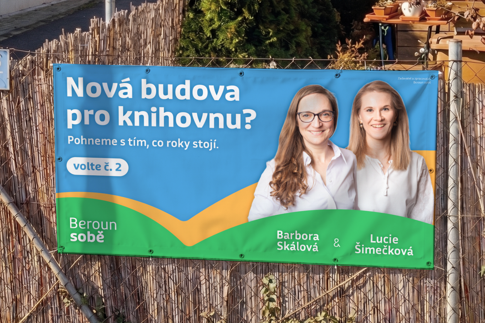
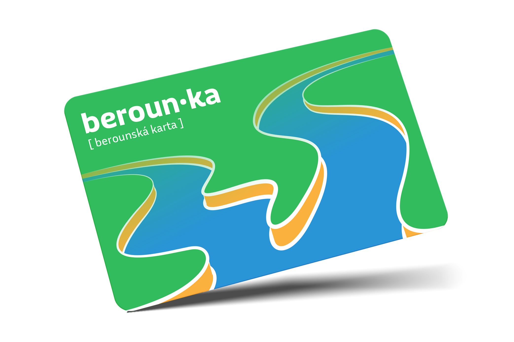
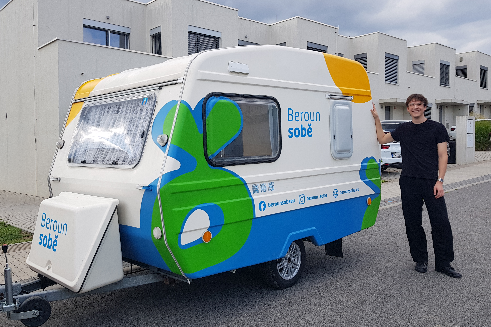
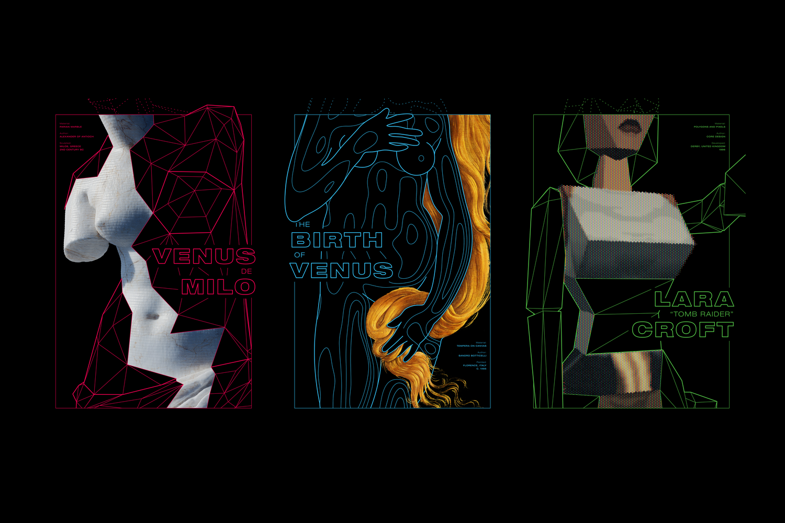

FAV ZČU (2026)
infografická stěna s animacemi v rozšířené realitě

ADAM KORANDA
grafický designér s přesahem do multimediální tvorby, student na Západočeské univerzitě v Plzni
- adam.koranda@email.cz
- +420 733 299 388
- Instagram: @adamkoranda
Neváhejte mě kontaktovat ohledně spolupráce nebo doplňujících informací.
Plnohodnotné stránky jsou v přípravě.




Beroun sobě (2026)
vizuální identita politckého hnutí
6 Havlů (2026)
interaktivní hra k výročí úmrtí Václava Havla
Work Life (2026)
herní automat s doplňujícím vizuálem
Vila Freund (2025)
návrh vizuální identity pro funkcionalistickou vilu
80 let ČRo Plzeň (2025)
interaktivní vitrína simulující prostředí rozhlasu

Venus Today (2025)
triptich plakátů a animace
Europle (2023)
webový kvíz založený na stylizované mapě